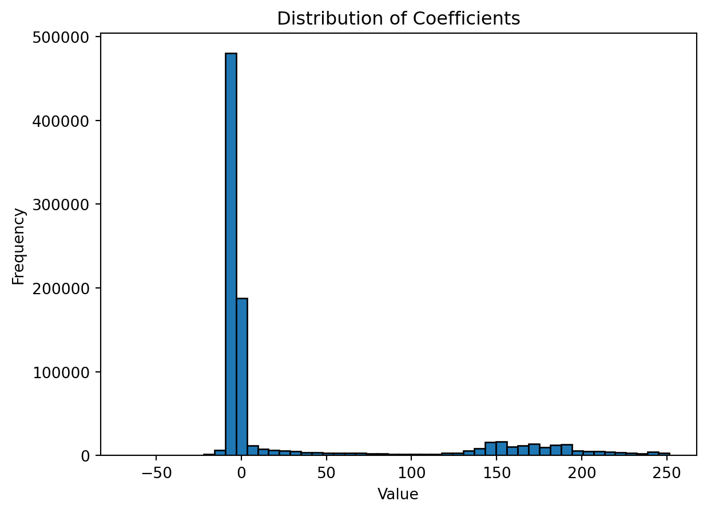
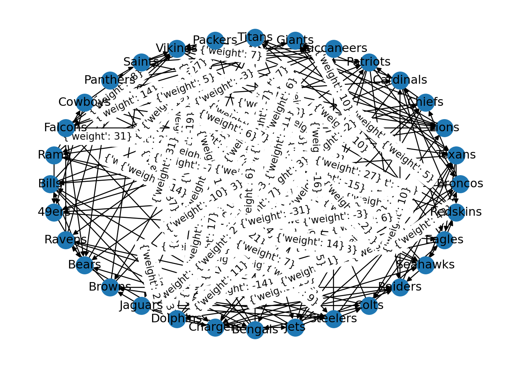

from PIL import Image
import numpy as np
# Load image
image = Image.open("catimage.png").convert("L") # Convert to grayscale
# Convert image to numpy array
image_array = np.array(image)
imageProject 2 - Stat 243
Bobby Buyalos
Project 1 was completed with Hanyan Cai. Our joint-write up is on his submission. We worked together for every part of this problem, devising our solutions together on a whiteboard and then writing them up.
Project 2 and 3 were completed and written up independently, although with lots of discussion between us and using the same dataset for project 3.
Project 2
Lets begin by choosing a photo! Of course the only reasonable choice is that of a cat…
(if you wish to follow along and need the specific image I’m using, on a uchicago email you can download it here: https://drive.google.com/file/d/1Kl3gDaQGHWJVXOLnf35M2FOf_LuUJKe6/view?usp=sharing )
The first thing we will do in program in the Harr Wavelet transform for a given n. We will show with n=6 what this looks like. See comments for summary of code.
import math
def harr(n: int):
#Ensure that we have an even size
if n % 2 != 0:
raise ValueError("n must be even!")
output = []
#Create upper block by iterating over even indicies
for i in range(0, n, 2):
row = [0]*n
row[i] = 1
row[i+1] = 1
output.append(row)
#Create lower block by iterating over even indicies
for i in range(0, n, 2):
row = [0]*n
row[i] = -1
row[i+1] = 1
output.append(row)
#use nested list comprehensions to apply our scalar sqrt(2)/2, and then cast our list a numpy array.
return np.array([[(math.sqrt(2)/2)*i for i in row] for row in output])
#Example with n = 6
harr(6)array([[ 0.70710678, 0.70710678, 0. , 0. , 0. ,
0. ],
[ 0. , 0. , 0.70710678, 0.70710678, 0. ,
0. ],
[ 0. , 0. , 0. , 0. , 0.70710678,
0.70710678],
[-0.70710678, 0.70710678, 0. , 0. , 0. ,
0. ],
[ 0. , 0. , -0.70710678, 0.70710678, 0. ,
0. ],
[ 0. , 0. , 0. , 0. , -0.70710678,
0.70710678]])Now, since we have our image as an mxn matrix, lets get the dimensions of this matrix. Observe that these are both even numbers so we do not need to cut anything and can make our Harr matrices for both of these even numbers.
print("Image shape:", image_array.shape)
m, n = image_array.shapeImage shape: (2912, 5000)Now, we know that the Haar Wavelet Transform equation is \(W_mAW_n^T\). So, we have everything we need to represent this:
transform = 1/2 * (harr(m) @ image_array @ harr(n).transpose())
# Convert numpy array back to image
image_from_array = Image.fromarray(transform).convert("L")
image_from_arrayLet’s now view just the blurred version:
blurred_array = transform[:int((m/2) + 1), :int((n/2) + 1)]
# Convert numpy array back to image
blurred_image_from_array = Image.fromarray(blurred_array).convert("L")
blurred_image_from_arrayThis is cool! But is this still a very nice and clear image of a cat. I predict that we will need to compress it a bunch until it is unrecognizable, so lets write a function that will compress it n times.
def compress(k, image_array: int, edge_mats = []):
assert k>0, "must compress atleast n=1 times!"
m, n = image_array.shape
if m%2 == 1:
m = m-1
image_array = image_array[:-1]
if n%2 == 1:
n = n-1
image_array = image_array[:, :-1]
transform = 1/2 * (harr(m) @ image_array @ harr(n).transpose())
edge_mats.append(transform)
transform_cut = transform[:int((m/2) + 1), :int((n/2) + 1)]
if k-1 > 0:
return compress(k-1, transform_cut, edge_mats)
image_from_array = Image.fromarray(transform_cut).convert("L")
return (image_from_array, edge_mats)Lets test this! First lets reload in our cat image and run for n = 2, 3, 4, 5, 6 compressions (may take up to 30 seconds; if you need to return this cell, rerun the one above it first!)
catimage = Image.open("catimage.png").convert("L") # Convert to grayscale
cat_image_array = np.array(image)
_, edge_mats = compress(6, cat_image_array, [])
for i, mat in enumerate(edge_mats):
print (f"Image after {i+1} compressions:")
m, n = mat.shape
transform_cut = mat[:int((m/2) + 1), :int((n/2) + 1)]
image_from_array = Image.fromarray(transform_cut).convert("L")
display(image_from_array.resize((5000,2912)))Image after 1 compressions:
Image after 2 compressions:
Image after 3 compressions:
Image after 4 compressions:
Image after 5 compressions:
Image after 6 compressions:
Great! I would subjectively say that the image that has been compresed three times is the lowest quality I would go before it becomes unreasonable. However, would if we could store this image using less storage? One key thing to observe is that we can actual reconstruct the image using just the edge matrices (lossless compression):
We have after a compression our transformation \(C = \frac{1}{2}W_mAW_n^T\), where W_n, W_m are the Haar transformations, A is our original image, and C is the block matrix produced after applying our compression. Since \(W_n\), \(W_m\) are orthogonal then we can rearrange this to have \(A = 2W_m^TCW_n\). Therefore, we only need to store \(C\) in order to recreate \(A\)!
This is very as \(C\) contains much less data than \(A\). For example, let’s see their relative sizes after compression 0, 1, 2, and 3 times (I saved these images to my computer and have written out their storage units here):
| # Compressions | Storage space |
|---|---|
| 0 Compressions | 662 KB |
| 1 Compression | 206 KB |
| 2 Compressions | 61 KB |
| 3 Compressions | 20 KB |
Amazing! So, since we have reasonable image quality after 3 compressions, we can store our image with 20KB, which is about 33x smaller than 662KB!
But, I think we can do even better by creating a threshold condition. Let us look distribution of the coefficents in our matrix C:
import matplotlib.pyplot as plt
C = edge_mats[2]
coefficients, bins = np.histogram(C, bins=50) # Adjust the number of bins as needed
# Plot the distribution
plt.bar(bins[:-1], coefficients, width=np.diff(bins), edgecolor='black')
plt.xlabel('Value')
plt.ylabel('Frequency')
plt.title('Distribution of Coefficients')
plt.show()
thirty_percentile = np.percentile(C, 30)
print("Thirty-th Percentile:", thirty_percentile)
forty_percentile = np.percentile(C, 40)
print("Forty-th Percentile:", forty_percentile)
Thirty-th Percentile: 0.0
Forty-th Percentile: 0.0So, we see that the value 0 is between our 30th and 40th percentile, This makes since looking at our histogram because the clustering right below 0. So, it would us space if we set all the values below a certain threshold to 0. Lets make our threshold 0 itself! So, for all negative numbers, we can just store them as 0. Lets do this and view it! Recall that \(A = 2W_m^TCW_n\) where \(A\) is the array of our image and \(C\) is the image after applying the Haar Wavelet transform
import copy
C_copy = copy.deepcopy(C)
for i, row in enumerate(C):
for j, coeff in enumerate(row):
if coeff < 0:
C_copy[i][j] = 0
m, n = C_copy.shape
if m%2 == 1:
m = m-1
C_copy = C_copy[:-1]
if n%2 == 1:
n = n-1
C_copy = C_copy[:, :-1]
A = 2*(harr(m).transpose()) @ C_copy @ harr(n)
A_image = Image.fromarray(A).convert("L")
A_imageLets compare this to what the third compression looks like without the threshold applied:
mat = C
m, n = mat.shape
transform_cut = mat[:int((m/2) + 1), :int((n/2) + 1)]
image_from_array = Image.fromarray(transform_cut).convert("L")
display(image_from_array.resize((5000,2912)))We can see that the third compression with the threshold is more pixelated. You can see this clearly looking at the cat’s eyes. However, overall it is not bad! Saving the matrix C is more efficent than saving the image \(A\) of the third compression because the space taken up by the edge images take up less space than the storage the image. And, once we apply this threshold compression, we can make store this matrix C even more efficently, as we now have more 0 (we are not storing very time negative values like -2.0 x 10^8). Making a class of values 0 also make create more ‘blocks’ of 0’s in the matrix, allowing the computer to store it with less space.
Project 3:
Data Source: https://github.com/devstopfix/nfl_results/blob/master/nfl%202014.csv
The team that we will choose to investigate is the 2014 season of the NFL! We will begin by important the raw data and investigating it. I reccomend downloading the raw file from the link above so that you can run the code as you read. We will begin by inspecting the code:
import pandas as pd
df = pd.read_csv('nfl 2014.csv')
df| season | week | kickoff | home_team | home_score | visitors_score | visiting_team | |
|---|---|---|---|---|---|---|---|
| 0 | 2014 | 1 | 2014-09-04T19:30:00-05:00 | Seahawks | 36 | 16 | Packers |
| 1 | 2014 | 1 | 2014-09-07T12:00:00-05:00 | Bears | 20 | 23 | Bills |
| 2 | 2014 | 1 | 2014-09-07T12:00:00-05:00 | Chiefs | 10 | 26 | Titans |
| 3 | 2014 | 1 | 2014-09-07T12:00:00-05:00 | Dolphins | 33 | 20 | Patriots |
| 4 | 2014 | 1 | 2014-09-07T12:00:00-05:00 | Eagles | 34 | 17 | Jaguars |
| ... | ... | ... | ... | ... | ... | ... | ... |
| 262 | 2014 | 19 | 2015-01-11T13:05:00-05:00 | Packers | 26 | 21 | Cowboys |
| 263 | 2014 | 19 | 2015-01-11T16:40:00-05:00 | Broncos | 13 | 24 | Colts |
| 264 | 2014 | 20 | 2015-01-18T15:00:00-05:00 | Seahawks | 28 | 22 | Packers |
| 265 | 2014 | 20 | 2015-01-18T18:30:00-05:00 | Patriots | 45 | 7 | Colts |
| 266 | 2014 | 21 | 2015-02-01T18:30:00-05:00 | Seahawks | 24 | 28 | Patriots |
267 rows × 7 columns
Now we will clean this up this data! We will perform the following: 1. remove columns so that we are only left with the home team, home score, visiting team, visiting score. 2. We will split our dataset in half, only looking at the first 133 rows. That way we can ‘train’ on the first half and then test how effective this is on the second half of the data. 3. From our 133 rows, we need to ensure that there is at most 1 game between any two teams (so that we do not have multiple edges between two nodes). We will do this and remove such duplicates (keeping the first instance of a game between two teams)
Once we have done this cleaning, we can put out data into a graph system! To do this, we will create an edge from home_team –> visitng team. To calculate the weight of this edge, we will use home team score - visiting team score.
import networkx as nx
# 1. and 2. Only Keep Relevany Columns and the top 133 rows
columns_to_keep = ['home_team', 'home_score', 'visitors_score', 'visiting_team']
df_filtered = df[columns_to_keep].head(133)
# 3. Remove duplicate games between teams
storage = []
Edges = []
for index, row in df_filtered.iterrows():
id = set()
id.add(row['home_team'])
id.add(row['visiting_team'])
if id not in storage:
Edges.append((row['home_team'], row['home_score'], row['visitors_score'], row['visiting_team']))
storage.append(id)
#Create list of all the teams in our database -- used to create verticies when constructing the graph (add_nodes_from function below)
vertex_set = set()
for i, team in enumerate(df_filtered['home_team']):
vertex_set.add(team)
vertex_set = list(vertex_set)
#Construct graph such that edges go from home team --> visitng team and weights are home score - visitng score; meanwhile construct weights list
G = nx.DiGraph()
G.add_nodes_from(vertex_set)
for tup in Edges:
score_difference = (tup[1] - tup[2])
G.add_edge(tup[0], tup[3], weight = score_difference)
# Draw the graph
nx.draw_circular(G, with_labels=True)
nx.draw_networkx_edge_labels(G, pos= nx.spring_layout(G))
plt.show()
Wow, that’s a busy graph! For fun, I just made it even busier for you, by labelling the edges…
Now, observe what the incidence matrix of this graph will look like. Each columns will represent an edge. Each edge represents a game, so there will be one 1 and one -1 in each column. Now, observe what happens if we take the transpose of this matrix, call it A. Any row of A will have one 1, one -1, and the rest 0. Say our 1 is in column i and our -1 is in row j. Then, the equation that corresponds to this row is x(i) - x(j). So, if let y = x(i) - x(j), and do this for every row, and put it in a vector of the respective row order, then we have the observed potential differences vector! Thus, we have crated a system Ax = b and we can use least squares to find the best fit for our vector x of potentials.
So, lets begin by forming the incidence matrix transpose and our observed potential differences vector b: 1. to get incidence matrix transpose we can directly get this from our graph G using built in functions of networkx 2. to get the observed potential differnces vector, we just have to take home score - column score, and make sure that it is in the correct row.
from networkx.linalg.graphmatrix import incidence_matrix
#Create incidence matrix
inc_matrix = incidence_matrix(G, oriented=True)
inc_matrix = inc_matrix.toarray()
inc_transpose = inc_matrix.transpose()
print("incidence transpose:", inc_transpose)
#Create observed potential differences vector b through three steps:
#a) Get edge weights as a dictionary
edge_weights_dict = dict(nx.get_edge_attributes(G, 'weight'))
#b) Get a list of edge weights in the same order as the incidence matrix
edge_weights_list = [edge_weights_dict[edge] for edge in G.edges]
#c) Convert the list to a NumPy array
edge_weights_array = np.array(edge_weights_list)
b = edge_weights_array
bincidence transpose: [[-1. 0. 0. ... 0. 0. 0.]
[-1. 0. 0. ... 0. 0. 0.]
[-1. 0. 0. ... 0. 0. 0.]
...
[ 0. 0. 0. ... 0. 0. -1.]
[ 0. 0. 0. ... 1. 0. -1.]
[ 0. 0. 0. ... 0. 0. -1.]]array([ 7, 7, 21, 25, 14, 11, 6, -5, -10, 21, 12, -3, 1,
-16, 27, 27, 14, 1, 9, 10, 4, 7, 26, 2, 28, 22,
-6, -2, -31, -6, -11, 13, 10, -16, -1, 2, -14, 7, 32,
21, -23, 13, -14, 3, 11, 6, 21, 17, -18, 7, -4, -18,
-11, 21, 3, 10, -3, -11, 3, 42, -14, -1, -28, -3, -14,
2, 19, -12, -15, 1, -8, 5, 5, -7, 20, 28, 22, -3,
-21, -13, 2, -2, 10, 5, -27, -8, 18, -14, 13, -19, -3,
37, 9, 19, 31, -3, 14, 26, 0, 10, 5, -8, -7, -14,
-20, 3, -3, 7, 17, -3, 24, 7, 27, -16, -24, -3, -11,
20, 6, -7, 6, 17, 3, 6, 27, 31, -31, -10, 2])That’s a nice and elegent way of getting the weighted incidence matrix!
Let’s do some testing to amake sure that our incidence transpose matrix and vector b are what we expect them to be. To do this, let’s create a dictionary that maps vertex numbers (as indicies in vertex_set), and the name of the vertex (the team name). This is important because this index number of each vertex corresponds to the column of our incidence transpose matrix represents, by the way we iterately defined our graph through the vertex_set list.
Once we have created this dictionary, vert_to_team, let’s check a few rows to make sure that the game that row represents has the correct spread in the vector b.
(I will put many of these outputs onto the markdown - because early on we cast a set to a list, then our rows may be in shuffled order–the rows that the reader runs will almost surely be in a different order than when I am writing this on my computer–but long as we check for the correct correspondence between the rows of our matrix and the vector b, then it does not matter if the rows are shuffled when you run it)
My first row is: [[-1. 0. 0. 0. 0. 0. 0. 0. 0. 0. 0. 0. 0. 0. 0. 0. 0. 0. 0. 0. 0. 0. 0. 1. 0. 0. 0. 0. 0. 0. 0. 0.]
Using code below, I see that my first team is the Ravens, and the 24th team is the Bengals. Going back to my original data source, in this game the Ravens scored 16 and were at home, and the Bengals scored 23 and were visiting. So, we expect our vector b to have -7 in the first row. And it does!
Let’s test row 101. This is [ 0. 0. 0. 0. 0. 0. 0. 0. 0. 0. 0. 0. 0. 0. 0. 0. 1. 0. 0. 0. 0. 0. 0. 0. 0. -1. 0. 0. 0. 0. 0. 0.]
So, the 17th team is the Browns, and our 26th team are the Steelers. Going back to our data source, we see that the Browns were at home and scored 30, and the Steelers were visiting and scored 27. So, we expect our vector b to have 3 in the 101-th row, And it does!
So, we can say that our matrix and our vector be have the correct row correspondence.
I love these checks. Getting the row indices right is a common source of error, and it’s great to see you’re being careful about it.
vert_to_team = {}
for i, team in enumerate(vertex_set):
vert_to_team[i] = team
#test row 1
print("test row 1:")
print(vert_to_team[0])
print(vert_to_team[23])
print(b[0])
print("\n")
#test row 101
print("test row 101:")
print(inc_transpose[100])
print(vert_to_team[16])
print(vert_to_team[25])
print(b[100])test row 1:
Broncos
Chargers
7
test row 101:
[ 0. 0. 0. 0. 0. 0. 0. 0. 0. 0. 0. 0. 0. 0. 0. 0. 0. 0.
0. 0. 0. 0. 0. 0. 0. -1. 0. 0. 1. 0. 0. 0.]
Bills
Jets
5Now, we will perform least squares using the normal equations!
The matrix defined as B can be thought of as the \(AA^T\), and so we have that \(x = B^{-1}A^Tb\). Note that this may be slightly confusing because our \(A\) is “inc_transpose” and so our \(A^T\) is “inc_transpose.transpose()”
b_column_vector = b.reshape(-1, 1) # Assuming b is a 1D array with 129 elements
B = inc_transpose.transpose() @ inc_transpose
Binv = np.linalg.inv(B)
x = Binv @ inc_transpose.transpose() @ b_column_vectorNow, we have found our potentials vector x! Let’s test it on some testing data!
We will essentially do all of the same things, but this time restricting our raw data to only the last 133 entires before filtering. We will do all of the same work we did earlier to arrive at the vector b, so feel free to not read this next code block since we are essentially copying and pasting everything we have done up to now. Let’s print vector b of our spreads of our testing data:
A more elegant way to do this would have been to put all your code into a function, and then call it twice – once with the first half of the data, and once with the second half. However, then you wouldn’t have been able to show your work step by step with the markdown, so this way was probably better!
# 1. and 2. Only Keep Relevany Columns and the bottom 133 rows
columns_to_keep = ['home_team', 'home_score', 'visitors_score', 'visiting_team']
df_filtered = df[columns_to_keep].tail(133)
# 3. Remove duplicate games between teams
storage = []
Edges = []
for index, row in df_filtered.iterrows():
id = set()
id.add(row['home_team'])
id.add(row['visiting_team'])
if id not in storage:
Edges.append((row['home_team'], row['home_score'], row['visitors_score'], row['visiting_team']))
storage.append(id)
#Create list of all the teams in our database -- used to create verticies when constructing the graph (add_nodes_from function below)
vertex_set = set()
for i, team in enumerate(df_filtered['home_team']):
vertex_set.add(team)
vertex_set = list(vertex_set)
#Construct graph such that edges go from home team --> visitng team and weights are home score - visitng score; meanwhile construct weights list
G = nx.DiGraph()
G.add_nodes_from(vertex_set)
for tup in Edges:
score_difference = (tup[1] - tup[2])
G.add_edge(tup[0], tup[3], weight = score_difference)
inc_matrix = incidence_matrix(G, oriented=True)
inc_matrix = inc_matrix.toarray()
inc_transpose = inc_matrix.transpose()
#Create observed potential differences vector b through three steps:
#a) Get edge weights as a dictionary
edge_weights_dict = dict(nx.get_edge_attributes(G, 'weight'))
#b) Get a list of edge weights in the same order as the incidence matrix
edge_weights_list = [edge_weights_dict[edge] for edge in G.edges]
#c) Convert the list to a NumPy array
edge_weights_array = np.array(edge_weights_list)
b = edge_weights_array
b_column_vector = b.reshape(-1, 1)
print(b_column_vector)[[ 3]
[ 7]
[-11]
[ -9]
[ 24]
[ 12]
[ 4]
[ 17]
[ 17]
[ 2]
[ 4]
[-13]
[ 12]
[ 17]
[ 8]
[ 3]
[ 25]
[ 28]
[ -8]
[ 4]
[-10]
[ -1]
[-17]
[ -3]
[ -6]
[ -3]
[ 11]
[ -8]
[ 41]
[ 33]
[ 5]
[ 6]
[ 10]
[ 5]
[ -3]
[-29]
[ -5]
[-17]
[ -3]
[ 18]
[ 6]
[ -3]
[-17]
[ -7]
[-31]
[-16]
[ -2]
[ 2]
[ 4]
[ 11]
[-23]
[ 35]
[ 4]
[ -2]
[ 11]
[ -7]
[ 15]
[ 52]
[-10]
[ -4]
[ 35]
[ 16]
[ 8]
[ 4]
[-16]
[ -3]
[ 3]
[ 14]
[ -1]
[ 8]
[ 10]
[ 8]
[ 8]
[-13]
[-16]
[-14]
[ 1]
[-14]
[ 8]
[-16]
[ -1]
[ 13]
[-15]
[ 2]
[ 7]
[ 3]
[ -9]
[-12]
[-21]
[-21]
[ 9]
[ 7]
[ -3]
[ -1]
[ -3]
[ 8]
[-13]
[-22]
[ 20]
[ 22]
[ 7]
[ 16]
[-24]
[ 4]
[ 11]
[ 2]
[ 21]
[ 16]
[ 14]
[ 14]
[ 6]
[ -4]
[ 24]
[ 19]
[-10]
[-20]
[-24]
[ 3]
[-27]]Now, above we created an “inc_transpose” matrix, (i.e. matrix A) for the testing data in the same way we created an “inc_transpose” matrix for our training data. Now, using the least squares vector x we got on our earlier matrix, we want to compare how Ax compares to b, where A is the matrix obtained from the testing data, x is the least squares matrix from the training data, and b is the observed potential differences vector of our testing data.
To compare, we will take the absolute value of their difference and their percent differences:
\(|y_i - b_i|\) and \(\frac{b_i - y_i}{y_i}\) where \(y_i\) is the i-th component of \(Ax\) for the \(x\) we got from least squares and the \(A\) of the testing data, and \(b_i\) is the i-th component of the b vector. So, if for a given row, Ax has 4 and b has 6, then its absolute value ‘score’ would be \(2\) and its percent change would be \(.5\). We will compute these two metrics for every component and take the average value. This will give us a sense of how ‘good’ our vector \(x\) is at testing \(b\):
output_abs = []
output_perc = []
ax = inc_transpose @ x
for i in range(len(b_column_vector)):
output_abs.append(abs(float(ax[i]) - float(b_column_vector[i])))
output_perc.append((float(b_column_vector[i]) - float(ax[i]))/float(ax[i]))
print("Average Value of absolute value 'score':", sum(output_abs)/len(output_abs))
print("Average Value of percent change 'score':", sum(output_perc)/len(output_perc))Average Value of absolute value 'score': 15.592436974789916
Average Value of percent change 'score': -4.835796049014146After doing this analysis, we see that our potentials vector x from the training data does a largely bad job of predicting the observed potential differences of the testing dataset. The average difference between the predicted spread and the actual spread is about 22 points! And the percent change between the predicted spread and the observed spread was a decrease of 56% This is quite bad. There could be a few reasons for this: 1. a ‘potential difference’ does not give much information about the magnitude of a win or a loss. If one game is 2-4 and another is 200-202, we will have the same potential differencce. This may create issues when extracting it to other teams. For example, a 2 potential diference of one game and a 2 potential difference of another game might not reflect the differences in magnitude between these two games and thus will not be helpful in predicting the potential differences when you match off these teams against others.
This is a very good point.
- Our data set only includes one game for any two given teams, and many teams only appear in the dataset a handful of times. Therefore, our data is very suspetible to outliers, or even to random chance where a good team is only playing bad teams, and vice versa. Also, due to the structure of the NFL, most of the games are played wtihin divisions, and so we may have worse predictions when two teams from different divisons play off. Thus, we need a larger sample size, and every team to play each other, in order to really create a more accurate x vector.
Excellent. Grade: E
This is just excellent. Two comments: first, using the threshold alone shouldn’t result in much savings, because you are still storing all the 0s. You allude to this when you talk about the “blocks” that the computer can use – that’s correct, but it won’t happen automatically, it needs to be implemented somehow. There are many algorithms designed to efficiently store sparse matrices, and you could look into those.
Second, when you say “we only need to store C in order to recreate A”, I’m not sure how to interpret this. Yes, you can recreate A from the entire block matrix – but what you are storing when you’re doing the iterative compressions is just the one quadrant of C, from which you can’t entirely recreate A. I think you know what you meant here, it’s just a little confusing to read.
Lastly: looping over the pixels to apply your threshold isn’t efficient. (In general, loops are the slowest way to do anything.) Here is a bit of code that will do it much more quickly:
Grade: E